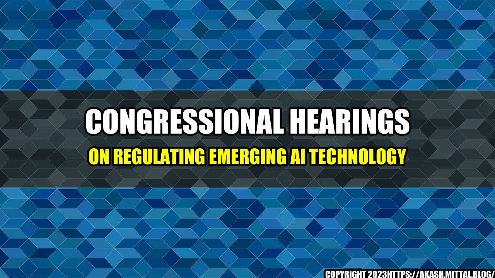

The Future of AI: Balancing Innovation and Regulation

Imagine being diagnosed with a rare, incurable disease that only a handful of doctors in the world have ever seen. Now, imagine those doctors having access to a powerful AI system that can scour millions of medical records and research articles to find a potential treatment for you. This scenario may soon become a reality, but it raises important ethical and regulatory questions about the use of artificial intelligence in healthcare and beyond.
As the advancements in AI technology continue to accelerate, lawmakers in Congress are grappling with how to strike the right balance between fostering innovation and protecting consumers from potential harm. In recent hearings, members of Congress have heard from a range of experts on the risks and benefits of AI, and the best ways to regulate its development and use.
The Benefits of AI
Before we dive into the regulatory challenges, it's worth taking a moment to explore the amazing potential of AI technology. Here are just a few examples:
- Healthcare: AI systems can analyze medical data to help diagnose diseases, identify risk factors, and develop personalized treatment plans. They can also help doctors and nurses coordinate care and manage hospital resources more efficiently.
- Transportation: Self-driving cars and trucks could reduce traffic congestion, accidents, and emissions while improving the overall efficiency of transportation systems. AI-powered drones could be used for everything from delivering packages to monitoring crop health.
- Business: AI can help companies make better decisions by analyzing data, predicting trends, and identifying opportunities for growth. Chatbots and virtual assistants can provide 24/7 customer support and reduce the burden on human employees.
These are just a few examples of the vast potential of AI. However, there are also risks and concerns that must be addressed.
The Risks of AI
One of the biggest risks of AI is its potential to reinforce existing biases and discrimination. For example, facial recognition algorithms have been shown to be less accurate for people with darker skin tones, which could lead to unfair treatment in criminal justice or employment settings. Similarly, automated hiring and promotion systems could perpetuate gender or racial disparities in the workplace.
There are also concerns about the impact of AI on jobs. While some experts predict that AI will create new jobs and industries, others worry that it could lead to widespread automation and displacement of human workers.
Finally, there are concerns about the use of AI in military and surveillance settings. AI-powered weapons and drones could be used in ways that violate international law or human rights. Similarly, facial recognition and monitoring systems could be used to track and surveil individuals without their consent.
Regulatory Challenges
Given these risks and concerns, it's clear that some level of regulation is needed to ensure that AI is developed and used responsibly. However, there are significant challenges to regulating such a complex and rapidly evolving technology.
- Technical Complexity: AI is a highly technical field that can be difficult for lawmakers and regulators to fully understand. In order to effectively regulate AI, policymakers need to have a deep understanding of how it works and what its limitations are.
- International Competition: While regulation may be necessary to protect consumers and prevent abuses, it could also put American businesses at a disadvantage in the global marketplace. Countries like China are investing heavily in AI research and development, and may be more willing to take risks and innovate without the same level of regulatory scrutiny.
- Potential for Unintended Consequences: Regulations can have unintended consequences, especially when applied to a rapidly evolving field like AI. Overly strict regulations could stifle innovation and prevent the development of potentially life-saving technologies.
Conclusion
So, where does that leave us? Here are three key takeaways from the hearings on AI regulation:
- Collaboration is key: The development of AI and its regulation require collaboration between policymakers, industry leaders, and civil society organizations. Only by working together can we ensure that AI is developed and used in ways that benefit society as a whole.
- Proportional regulation: Instead of strict, one-size-fits-all regulations, policymakers should consider more proportional responses that take into account the risks and benefits of specific applications of AI. For example, different regulations may be needed for healthcare AI systems than for self-driving cars.
- Ongoing evaluation: Finally, any regulatory framework must be flexible and adaptable to new developments in the field. As AI evolves, regulations must be periodically reevaluated to ensure that they are still effective and appropriate.
The future of AI is both exciting and uncertain. By working together to strike the right balance between innovation and regulation, we can help ensure that AI lives up to its promise as a force for good in the world.
References:
Hashtags:
- #AIregulation
- #EmergingAI
- #BalancingInnovationandRegulation
Category: Technology
Curated by Team Akash.Mittal.Blog
Share on Twitter Share on LinkedIn